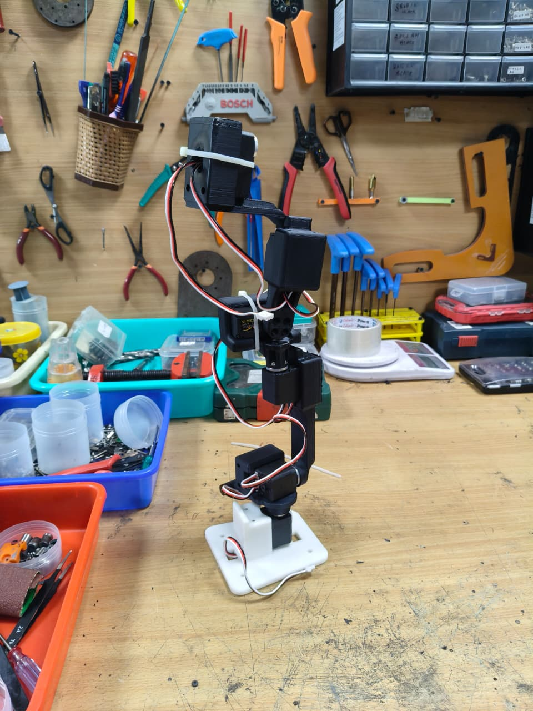
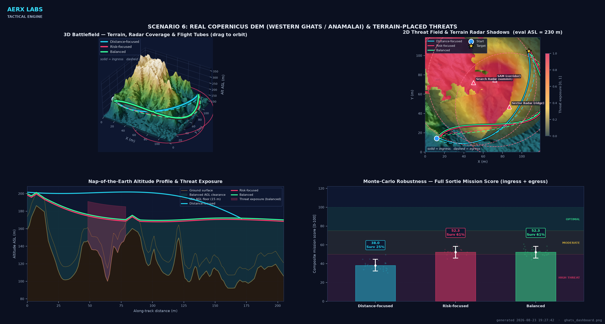
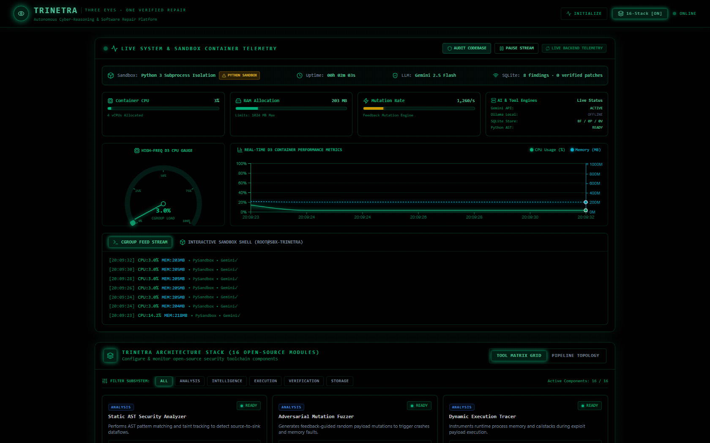

UPCOMING2027
VFS Student Design Competition 2027
Taking on the Vertical Flight Society's Bell-sponsored RFP — designing a VTOL aircraft for offshore oil-rig crew transport, from mission requirements through preliminary vehicle design.
UAVS · ROBOTICS · AUTONOMOUS SYSTEMS
I am Harshwardhan Giri Goswami, a third-year Aerospace Engineering student at IIT Kanpur focused on UAVs, intelligent robotics, and the systems that make them dependable.
01 / Mission profile
I am interested in research and development around UAVs, autonomous aerial systems, robotics, computer vision, and machine learning. My goal is to turn aerospace engineering principles into practical systems that can sense, decide, and perform in the real world.
02 / Updates
Recent work, launches, and things currently in flight.
Taking on the Vertical Flight Society's Bell-sponsored RFP — designing a VTOL aircraft for offshore oil-rig crew transport, from mission requirements through preliminary vehicle design.
Developing a research-grade UAV mission-planning engine for the AerX Labs Advanced Aerospace Systems Challenge 2026 — planning a complete survivable sortie over real terrain, not just the shortest path.
View repository ↗Built an autonomous vulnerability detection & repair platform for the AI Kavach cyber-reasoning challenge — detects flaws, generates AI-driven patches, and independently verifies the fix. 32/32 end-to-end tests passing across 5 CWE classes.
View repository ↗Joined the Wadhwani Center for Robotics to develop a kinematically isomorphic teleoperation controller for an AgileX arm, enabling scalable imitation-learning data collection at 100 Hz.
Building product features across React, Node.js, and PostgreSQL, including payment flows.
Joined after securing AIR 8922 in JEE Advanced and a 100 percentile score in Physics in JEE Main.
03 / Selected projects
Hands-on systems work across robotics, autonomy, software, and signal processing.

7 DOF · GELLO LEADER ARMROBOTICS RESEARCH · 2026 - PRESENT
Building a GELLO-style passive leader arm to teleoperate an AgileX NERO 7-DOF robot — seven joint angles read straight off the servo bus and mapped to the follower with no inverse kinematics, for scalable imitation-learning data collection.

TERRAIN-MASKED SORTIE · REAL DEMUAV AUTONOMY · 2026
A research-grade mission-planning simulator that flies a UAV in, survives radar exposure by hiding in terrain, and returns home on one tank of fuel — over real-world elevation data.

PROOF, NOT A PROMISEAI & SECURITY · 2026
An autonomous vulnerability detection and repair platform built for the AI Kavach challenge. It finds flaws, reasons about fixes with AI, and proves that exploits fail while functionality stays intact.
AUDIO MATCH / 5.25M HASHES
SIGNALS & SYSTEMS · 2026
Built and deployed an interactive audio identifier using STFT spectrograms, local-maxima detection, and combinatorial hashing.
ROBOTICS · 2026
Designed and built a 6-DOF robotic arm controlled in real time through hand gestures, combining an in-house mechanical assembly with computer vision.
04 / Journey
A few moments that shaped how I approach engineering.
FOUNDATION
Completed CBSE with 95.6%, building a strong academic base and early interest in science, engineering, art, and sport.
TAKEOFF
Entered IIT Kanpur after securing AIR 8922 in JEE Advanced and a 100 percentile score in Physics in JEE Main. Began exploring the intersection of aerospace, programming, and systems design.
BUILD
Expanded from coursework into physical systems, C++ applications, fabrication, and collaborative engineering projects including a tendon-driven infinity gauntlet.
CURRENT VECTOR
Working on robotic teleoperation research at IIT Kanpur and product engineering at Apni Vidya, while shipping projects across UAV autonomy, AI security, and computer vision.
05 / Experience
RESEARCH INTERN · 2026 - PRESENT
IIT Kanpur
Teleoperation · Kinematics · CAD · Control systemsFULL-STACK DEVELOPER INTERN · 2026 - PRESENT
Remote
React · Node.js · PostgreSQL · PaymentsASSOCIATE INDUSTRY CONNECT HEAD · 2026 - PRESENT
IIT Kanpur
Industry outreach · Technical engagement · Community06 / Beyond engineering
Outside academics, I follow cricket closely, enjoy movies and web series, and spend time on art and craft. Those interests keep me curious, observant, and balanced - qualities I bring to technical work and collaboration.
07 / Connect
Open to research, UAV and robotics projects, engineering internships, and conversations with people building the future of aerospace.